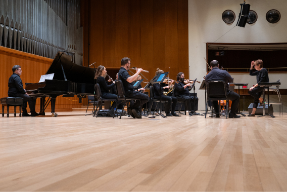
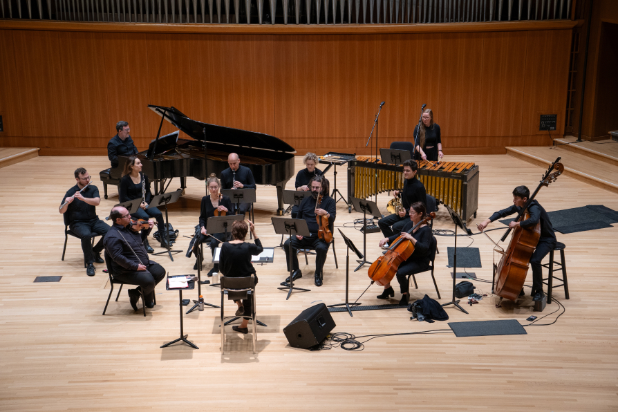
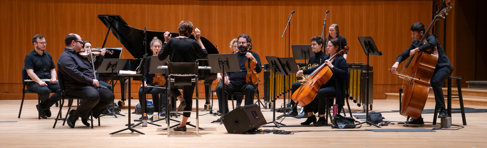
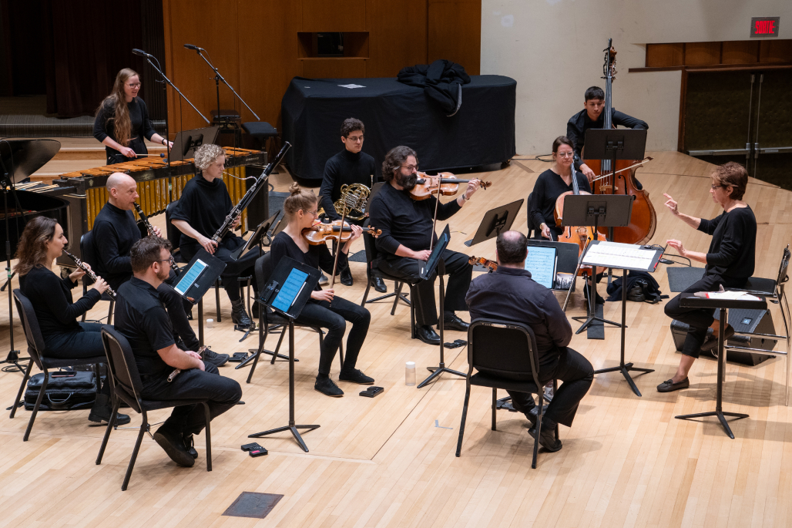

Enregistré le 11 septembre 2024
à la salle Claude Champagne à Montréal




Flûte Jeffrey StonehouseHautbois Élise PoulinClarinette Martin CarpentierBasson Alexandra EastleyCor Simon PoirierMarimba Catherine CherrierPiano Francis PerronViolon Hubert BrizardViolon 2 Jeanne CôtéAlto François VallièresVioloncelle Julie TrudeauContrebasse William Boivin